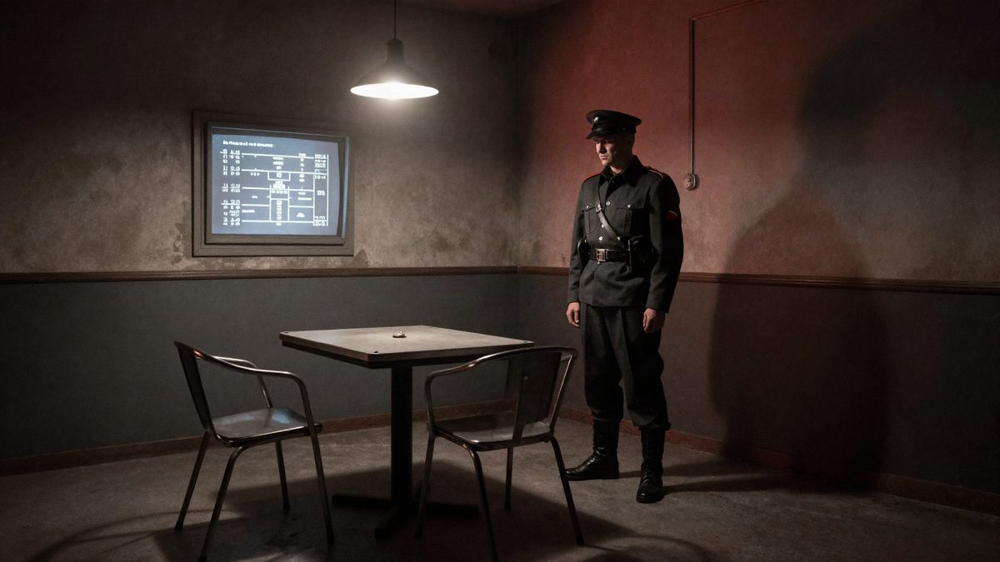
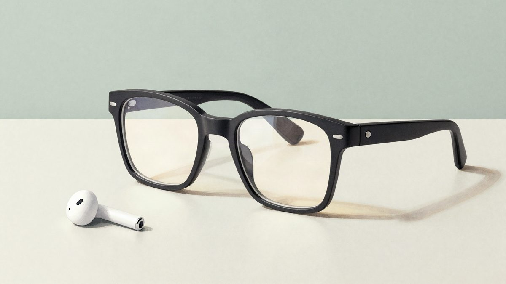
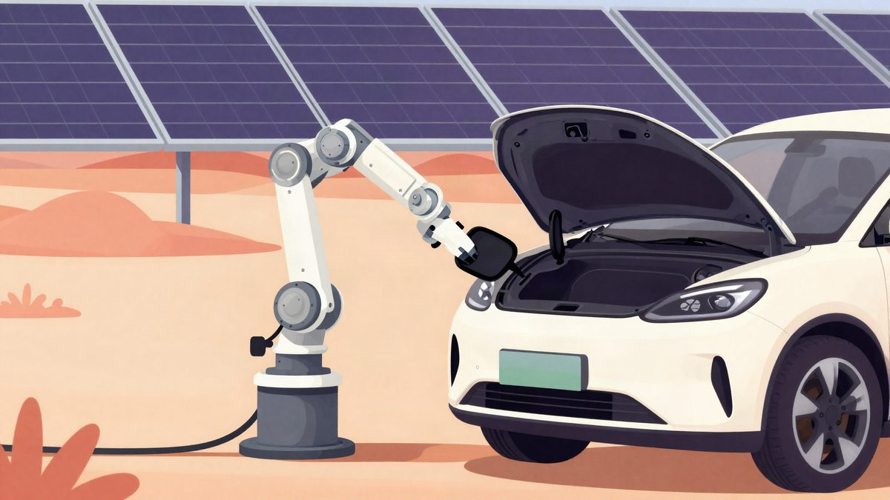

Wolfenstein 3 službeno u izradi: MachineGames radi novi glavni nastavak serijala

Šefica Xboxa Asha Sharma potvrdila je 12. studenoga da MachineGames radi Wolfenstein 3, prvi glavni nastavak serijala nakon The New Colossusa iz 2017. Uz najavu je objavila sliku koja navodno prikazuje prvu stranicu scenarija. Platforme, datum izlaska i cijena nisu poznati.
Wolfenstein 3 je službeno u produkciji u studiju MachineGames. Potvrdila je to Asha Sharma, izvršna direktorica Xboxa, na svom službenom Twitter računu 12. studenoga 2026.
Sharma je cijeli dan objavljivala najave povodom 25. godišnjice Xboxa, među ostalim i potvrdu da Id Software radi na novoj igri. Najava Wolfensteina 3 je najveća među njima. U objavi stoji da je to "jedna od najvažnijih franšiza u gamingu" i da je tim "napravio izvanredan posao" na njezinu razvoju. Sharma dodaje da se veseli dijeljenju novih informacija.
Ovo je pravi glavni nastavak, a ne spin-off poput igre Wolfenstein: Youngblood. Prvi je glavni nastavak serijala nakon igre Wolfenstein 2: The New Colossus iz 2017., dakle nakon gotovo deset godina.
Slika scenarija
Uz najavu Sharma je objavila i sliku koja izgleda kao prva stranica dijaloškog scenarija igre. Prvo se poglavlje navodno zove Nazitraz. Scena počinje u ćeliji za ispitivanje, gdje razgovaraju dugogodišnji protagonist serijala William Joseph "B.J." Blazkowicz i lik po imenu Otto, koji govori njemački. Otto bi mogao biti jedan od brojnih negativaca iz povijesti serijala. Čini se da je u sceni i Fergus, B.J.-jev dugogodišnji pomoćnik. Više se iz slike ne može zaključiti.
Što još nije poznato
Platforme i datum izlaska nisu objavljeni.
MachineGames je Bethesdin Wolfenstein developer od 2014., kada je izašao Wolfenstein: The New Order. Slijedili su ga Wolfenstein: The Old Blood i Wolfenstein 2: The New Colossus.
Izvor: GamesRadar
Povezani članci
 REK je predstavio S.T.E.E.L, sustav kojim čovjek upravlja borbenim humanoidnim robotom12. studenoga 2026.
REK je predstavio S.T.E.E.L, sustav kojim čovjek upravlja borbenim humanoidnim robotom12. studenoga 2026.
Apple navodno razvija AI naočale i AirPods s kamerama, dobavljač to potvrdio11. studenoga 2026.
BYD je u Emiratima pokazao robotsku ruku za punjenje snagom do 1000 kW9. studenoga 2026.